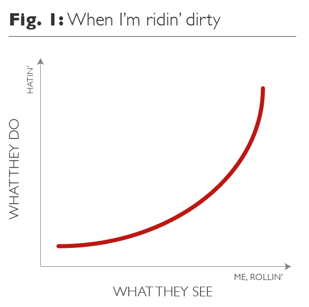

Welcome to PSYC 350 Laboratory
Lab 1
Lab Instructor


Psych majors
vs. Psych professionals

The key distinction is ability
to EVALUATE and CREATE new knowledge
üí≠ Evaluate Knowledge

üìã Create Knowledge

Empirical Research
- Informs various real world decisions & processes
- üì¢ Peer-review & replication provide credibility
- üíº Not limited to academic psychology

Who does what

What is known

How to decide
Lecture vs. Lab

- Purpose of LECTURE is to LEARN…
- Vocabulary
- Underlying concepts

- Purpose of LAB is to PRACTICE…
- Application
- Research skills

So, what does this mean?
Research skills are not only foundational but also iterative…
- You cannot bullüí© success in this class‚Ķ
- üì£ Build a solid foundation
- üí≠ Develop strategies that work for YOU
- ⏰ Take the time to learn how to read a recipe AND cook it
TL;DR

Important
- Take this course seriously…
- …if you want a good grade.
- …if you want to go to graduate school.
- …if you want a job in any industry.
- …if you want to understand … the world!
Keep in Mind üëÄ

Warning
- You need a “C” (not a “C-”) for this course to count toward the Psychology Major
- You must complete all exams to receive a passing grade in this course
- You must complete all the take-home laboratory assignments to receive a passing grade in this class
- You must attend lab classes to receive a passing grade in this class
How to Succeed üéØ

- Do the work…
- Come to lab…
- Be professional…
- Embrace the process!
Don‚Äôt freak out! üåù


Questions?